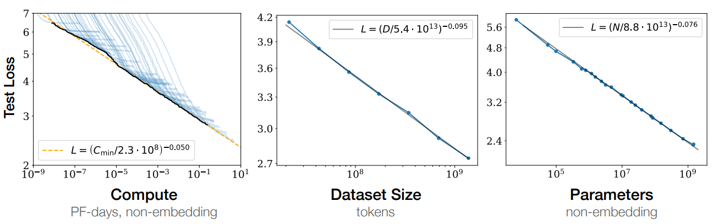
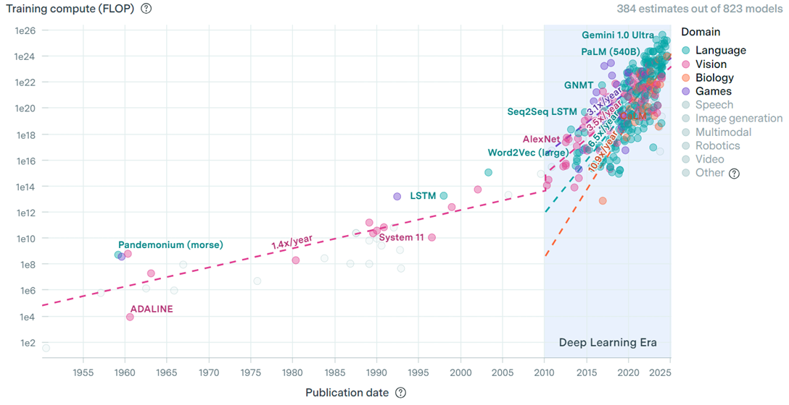
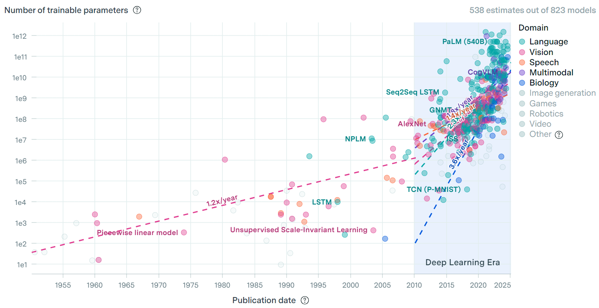
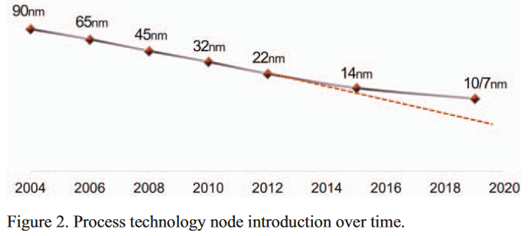
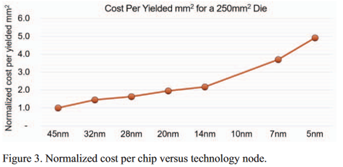

Why Chiplets Emerged: Scaling Beyond Monolithic Chips
The modern compute boom, especially in AI, has exposed a painful truth: demand is accelerating faster than traditional chip scaling can deliver. Chiplets emerged as a practical answer to this mismatch.
The semiconductor industry spent decades relying on transistor shrinking and larger monolithic dies to raise performance. That approach still matters, but it no longer carries the full load by itself. As AI systems grew, three limits became obvious at once: workload demand rose sharply, process-node progress slowed, and large-die economics became harder to justify.
The demand curve changed
AI workloads are now driving a new wave of system requirements:
- More raw compute for training and inference
- Larger memory capacity and higher memory bandwidth
- Faster communication inside and across devices
- Better interconnect performance in switches and network fabrics
This is not a small, temporary bump. Model scale, training data size, and hardware appetite have all grown rapidly over the last decade.



Why monolithic scaling is under pressure
Classic Moore-style progress is slowing down in several ways:
- Process node transitions are harder and slower
- New nodes are significantly more expensive per step
- Physical limits are becoming visible at advanced nodes
- Very large dies suffer lower yield
- Reticle limits cap how far a single die can scale
- Power delivery and thermal constraints become harder at larger scales
Even if monolithic design is still viable for many products, its economic and technical risk increases quickly as die size and complexity grow.




Chiplets: a new integration layer
Chiplets introduce another level in the system hierarchy. Instead of forcing all functions into one giant die, designers can partition functionality into smaller dies and integrate them inside one package.
This shifts scaling from only transistor-level progress to architecture-level and packaging-level progress.
You can think of modern system scaling as a multi-layer problem:
- On-die architecture
- Package-level integration (chiplets)
- Board or machine-level integration
- Rack and cluster-level scaling
Real performance growth comes from balancing all layers, not over-optimizing only one.
Why advanced packaging matters
Chiplets are not just an architecture idea; they are enabled by packaging technology:
- High-density die-to-die links
- Better substrate and interposer capabilities
- Improved integration methods for heterogeneous dies
Advanced packaging makes it realistic to combine compute, IO, memory-related logic, and other functions from different process nodes in one package.

That creates several advantages:
- Better yield from smaller die sizes
- More flexible design reuse across product lines
- Process-node matching, so leading-edge silicon is used only where it matters most
- Potentially better cost-performance tradeoffs
The core takeaway
Chiplets are not a replacement for process scaling. They are a response to the limits of relying on process scaling alone.
As AI and large-scale computing continue to grow, the winning strategy is increasingly clear: combine transistor innovation, architecture innovation, packaging innovation, and system-level co-design. Chiplets sit at the center of that transition.
Draft written by Yang Zhang and Xu Wang (2024/07/23).
Polished and formatted by GPT4.5 mini (2026/04/20).